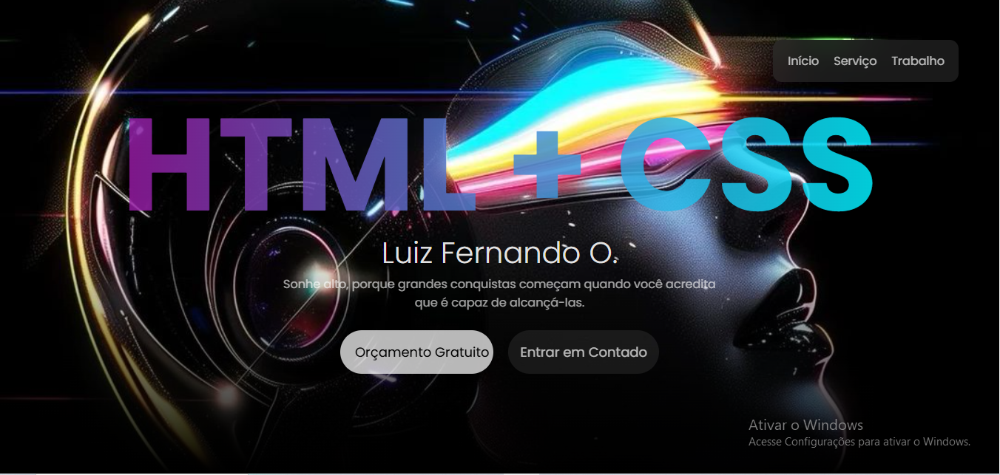
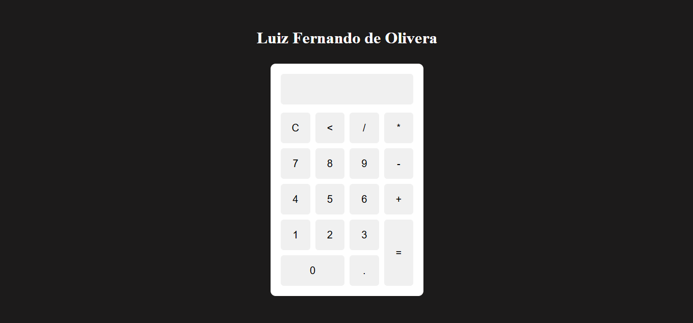

2023
O início do interesse
Comecei a me interessar por tecnologia e a explorar as possibilidades dessa área.

Aprendiz desenvolvedor
Tenho 17 anos, curso o 2º ano do Ensino Médio junto ao Técnico em Informática na Escola Raphael Di Santo Garcia. Sou dedicado, gosto de tecnologia e tenho grandes sonhos e objetivos que busco conquistar com esforço e determinação.
const desenvolvedor = {
nome: "Luiz Fernando",
foco: "Desenvolvedor",
paixao: "Tecnologia & Código",
mindset: "Dedicação & Evolução"
};
A jornada cronológica do meu aprendizado contínuo
Comecei a me interessar por tecnologia e a explorar as possibilidades dessa área.
Comecei a mexer um pouco com códigos e a conhecer melhor o desenvolvimento de software.
Entrei no curso técnico de Informática, iniciando uma etapa mais estruturada da minha formação na área.
Estou terminando o segundo ano do curso técnico de TI, ampliando meus conhecimentos e desenvolvendo projetos.
Meu objetivo é crescer na área de desenvolvimento, adquirindo cada vez mais experiência e conhecimento para me tornar um profissional excelente. Busco minha primeira oportunidade no mercado de trabalho para colocar meus conhecimentos em prática, aprender com novos desafios e evoluir continuamente, contribuindo com dedicação e responsabilidade para a empresa e construindo uma carreira sólida na área de tecnologia.
Apresentação imersiva dos 4 projetos desenvolvidos

Testando meus conhecimentos e minhas primeiras ideias

Projeto de tela de login com interações

Testando meus conhecimentos em lógica de programação

Primeiro site comercial para uma loja de informática
Tecnologias que fazem parte da minha rotina de estudo e desenvolvimento